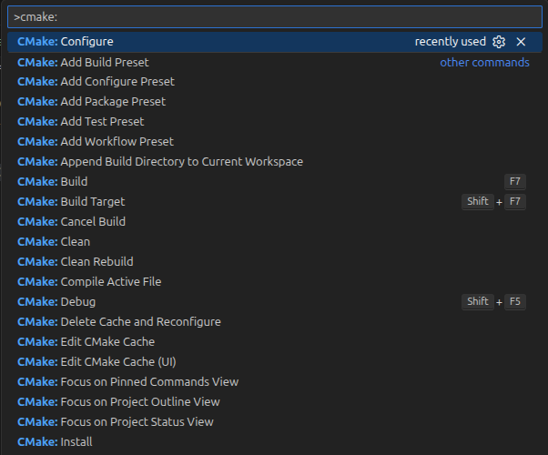

cmake
presets
CMakePreset.json
Programming / cpp / cmake
CMakePresets.json is a project-root JSON file that stores repeatable CMake workflows: configure, build, test, package, and workflow settings. Instead of remembering:
CMake: Build system generator create Make/Ninja files describer how the project should be built
Make/Ninja: build tools run the compiler and linker to create binary from source code
GCC/Clang: compiler toolchain
-S . -B build
--build build
-S . -B build -DUSE_FAST_MODE= ON
--build build
# List cache variables after configuration.
-S . -B build -LA
# first time clean cache
# CMAKE_STRIP:FILEPATH=/usr/bin/strip
# ...
# CMAKE_VERBOSE_MAKEFILE:BOOL=FALSE
# USE_FAST_MODE:BOOL=OFF
set variable -S . -B build -DUSE_FAST_MODE= ON -LA
# CMAKE_STRIP:FILEPATH=/usr/bin/strip
# ...
# CMAKE_VERBOSE_MAKEFILE:BOOL=FALSE
# USE_FAST_MODE:BOOL=ON
reset variable to default -S . -B build -U USE_FAST_MODE
Create CMakePresets.json in the project root:
CMakePresets.json {
"version" : 3 ,
"configurePresets" : [
{
"name" : "default" ,
"generator" : "Ninja" ,
"binaryDir" : "${sourceDir}/build/default" ,
"cacheVariables" : {
"CMAKE_BUILD_TYPE" : "Release" ,
"USE_FAST_MODE" : "OFF"
}
},
{
"name" : "fast" ,
"inherits" : "default" ,
"binaryDir" : "${sourceDir}/build/fast" ,
"cacheVariables" : {
"USE_FAST_MODE" : "ON"
}
}
],
"buildPresets" : [
{
"name" : "default" ,
"configurePreset" : "default"
},
{
"name" : "fast" ,
"configurePreset" : "fast"
}
]
}
Use the preset instead of repeating -S, -B, and -D arguments:
--list-presets
--preset default
--build --preset default
--preset fast
--build --preset fast
CMake presets by creating a file named CMakePresets.json in your project root directory . The basic format for this file is:
{
"version" : 3 ,
"cmakeMinimumRequired" : {
"major" : 3 ,
"minor" : 23 ,
"patch" : 0
},
"configurePresets" : [
{
// ...
}
],
"buildPresets" : [
{
// ...
}
],
"testPresets" : [
{
// ...
}
]
}
Preset types
Section
Used by
Purpose
"configurePresets"cmake --presetHow to generate build files
"buildPresets"cmake --build --presetHow to compile
"testPresets"ctest --presetHow to run tests
"packagePresets" (optional) cpack --presetHow to create installers (support cmake>3.24)
version field
version: 2 → CMake ≥ 3.20
version: 3 → CMake ≥ 3.21
version: 4 → CMake ≥ 3.23
version: 5 → CMake ≥ 3.24
version: 6 → CMake ≥ 3.25
ubuntu 22.04 default cmake : 3.22.1
ubuntu 24.04 default cmake : 3.28.3
Preset definition
Field
Description
"name"Unique identifier (used in commands)
"displayName"Friendly label shown in IDE
"generator"Build tool (“Ninja”, “Unix Makefiles”, etc.)
"binaryDir"Output directory for this preset
"cacheVariables"Key-value pairs (like -D arguments)
"inherits"Reuse another preset’s settings
"environment"Environment variables set for this preset
"hidden"If true, not shown in IDE list but usable as a base preset
"configurePresets" : [
{
"name" : "default" ,
"hidden" : false ,
"generator" : "Ninja" ,
"description" : "Default configure preset" ,
"binaryDir" : "${sourceDir}/build" ,
"cacheVariables" : {
"CMAKE_BUILD_TYPE" : "Release"
}
}
]
Using inheritance
Avoid repeating common options using inheritance
{
"name" : "base" ,
"hidden" : true ,
"generator" : "Ninja" ,
"cacheVariables" : {
"CMAKE_EXPORT_COMPILE_COMMANDS" : "ON"
}
},
{
"name" : "debug" ,
"inherits" : "base" ,
"binaryDir" : "${sourceDir}/build/debug" ,
"cacheVariables" : {
"CMAKE_BUILD_TYPE" : "Debug"
}
}
Commands
Demo
VSCode tips
.vscode/settings.json "cmake.useCMakePresets" : "always"
Run:
cmake: configure
cmake: build
cmake: install

src/main.cpp #include <iostream>
#include "demo/lib.hpp"
int main ( int argc , char ** argv ) {
std :: string name = ( argc > 1 ) ? argv [ 1 ] : "" ;
std :: cout << demo :: greet ( name ) << " \n " ;
std :: cout << "2 + 3 = " << demo :: add ( 2 , 3 ) << " \n " ;
return 0 ;
}
src/lib.cpp #include "demo/lib.hpp"
namespace demo {
int add ( int a , int b ) {
return a + b ;
}
std :: string greet ( const std :: string & name ) {
if ( name . empty ()) return "Hello, World!" ;
return "Hello, " + name + "!" ;
}
} // namespace demo
include/demo/lib.hpp #pragma once
#include <string>
namespace demo {
// Adds two integers and returns the sum.
int add ( int a , int b );
// Returns a greeting message ("Hello, <name>!"). If name empty => "Hello, World!".
std :: string greet ( const std :: string & name );
} // namespace demo
test/test_add.cpp #include <gtest/gtest.h>
#include "demo/lib.hpp"
TEST ( AddTests , BasicPositive ) {
EXPECT_EQ ( demo :: add ( 2 , 3 ), 5 );
}
TEST ( AddTests , NegativeAndPositive ) {
EXPECT_EQ ( demo :: add ( -1 , 1 ), 0 );
}
TEST ( GreetTests , EmptyName ) {
EXPECT_EQ ( demo :: greet ( "" ) , "Hello, World!" );
}
TEST ( GreetTests , NonEmptyName ) {
EXPECT_EQ ( demo :: greet ( "Alice" ), "Hello, Alice!" );
}
// main provided by GTest::gtest_main
CMakePresets.json {
"version" : 3 ,
"configurePresets" : [
{
"name" : "debug" ,
"generator" : "Ninja" ,
"binaryDir" : "${sourceDir}/build/debug" ,
"cacheVariables" : {
"CMAKE_BUILD_TYPE" : "Debug" ,
"CMAKE_CXX_STANDARD" : "17" ,
"CMAKE_EXPORT_COMPILE_COMMANDS" : "ON" ,
"DEMO_BUILD_TESTS" : "ON"
}
},
{
"name" : "release" ,
"generator" : "Ninja" ,
"binaryDir" : "${sourceDir}/build/release" ,
"cacheVariables" : {
"CMAKE_BUILD_TYPE" : "Release" ,
"CMAKE_CXX_STANDARD" : "17" ,
"CMAKE_EXPORT_COMPILE_COMMANDS" : "ON" ,
"DEMO_BUILD_TESTS" : "ON"
}
}
],
"buildPresets" : [
{
"name" : "debug-build" ,
"configurePreset" : "debug" ,
"jobs" : 8
},
{
"name" : "release-build" ,
"configurePreset" : "release" ,
"jobs" : 8
},
{
"name" : "package" ,
"configurePreset" : "release" ,
"targets" : [ "package" ],
"jobs" : 8
}
],
"testPresets" : [
{
"name" : "test-debug" ,
"configurePreset" : "debug"
},
{
"name" : "test-release" ,
"configurePreset" : "release"
}
]
}
cmake_minimum_required ( VERSION 3.22 )
# Project setup
project ( DemoApp VERSION 0.1.0 LANGUAGES CXX )
# Options
option ( DEMO_BUILD_TESTS "Build tests" ON )
# Library
add_library ( demolib src/lib.cpp )
add_library ( demo::demolib ALIAS demolib )
target_include_directories ( demolib
PUBLIC
$< BUILD_INTERFACE:${CMAKE_CURRENT_SOURCE_DIR}/include >
$< INSTALL_INTERFACE:include >
)
set_target_properties ( demolib PROPERTIES
CXX_STANDARD 17
CXX_STANDARD_REQUIRED YES
CXX_EXTENSIONS NO
)
# Executable
add_executable ( demo_app src/main.cpp )
target_link_libraries ( demo_app PRIVATE demo::demolib )
set_target_properties ( demo_app PROPERTIES
CXX_STANDARD 17
CXX_STANDARD_REQUIRED YES
CXX_EXTENSIONS NO
)
# Testing
include ( CTest )
if ( DEMO_BUILD_TESTS AND BUILD_TESTING )
include ( FetchContent )
# Avoid overriding parent project's compiler/linker settings in gtest
set ( BUILD_GMOCK OFF CACHE BOOL "Disable gmock" FORCE )
set ( INSTALL_GTEST OFF CACHE BOOL "Disable gtest install" FORCE )
FetchContent_Declare (
googletest
URL https://github.com/google/googletest/archive/refs/tags/v1.14.0.zip
)
FetchContent_MakeAvailable ( googletest )
enable_testing ()
add_executable ( test_add test/test_add.cpp )
target_link_libraries ( test_add PRIVATE demo::demolib GTest::gtest_main )
add_test ( NAME test_add COMMAND test_add )
endif ()
# configure
--preset debug
# build
--build --preset debug-build
# test
--preset test-debug
Reference